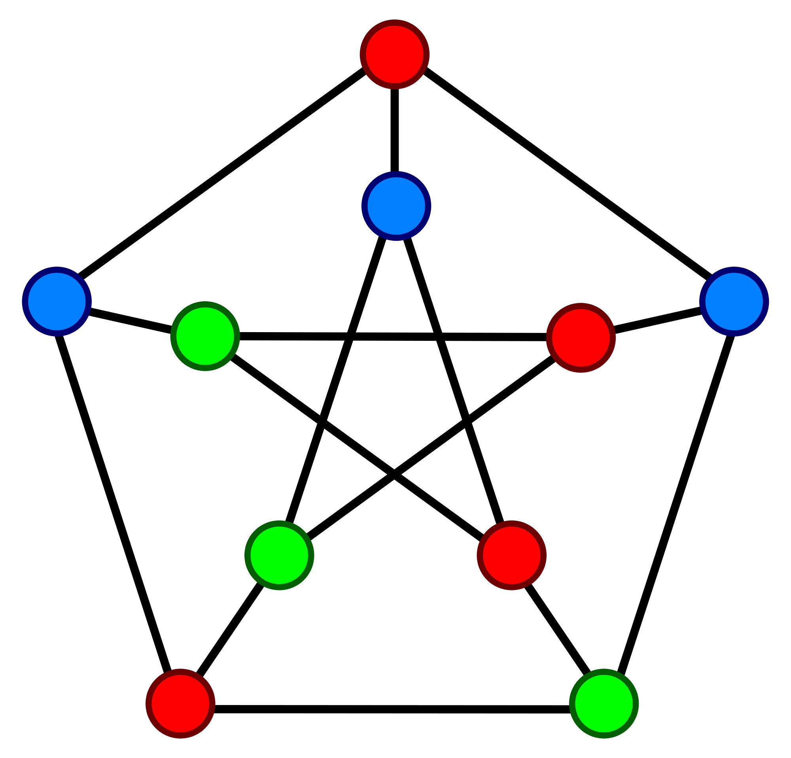
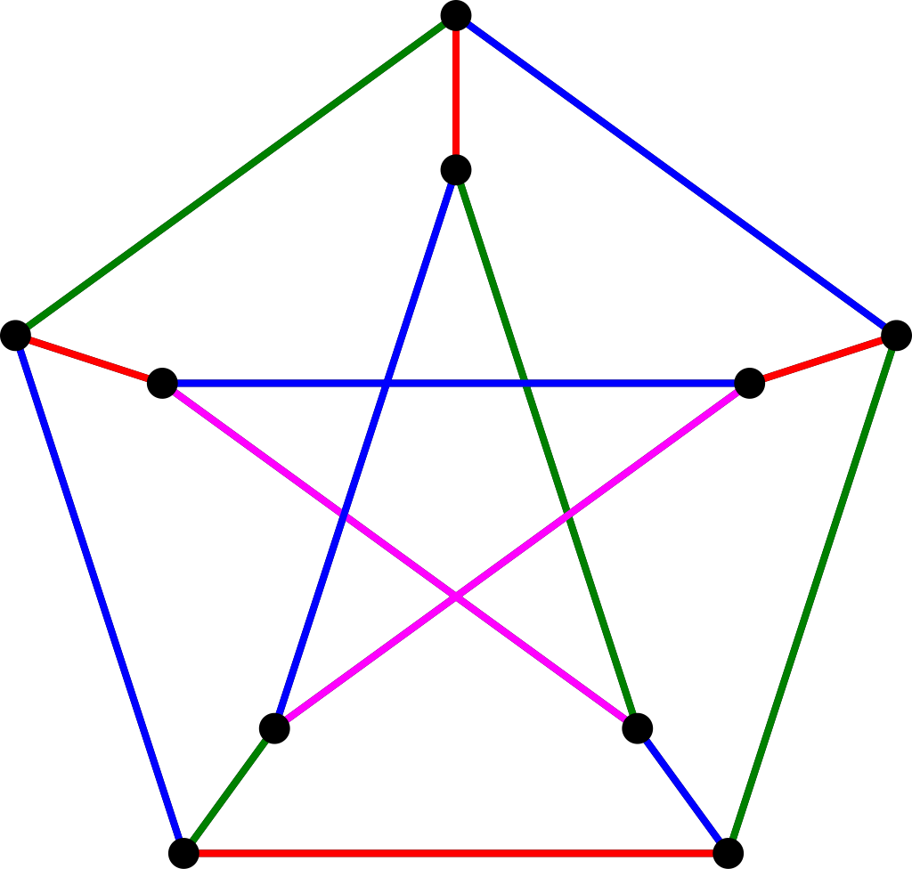

https://en.wikipedia.org/wiki/Graph_coloring
Kolorowanie grafu (ang. graph coloring) polega na przypisaniu określonym elementom składowym grafu (wierzchołkom, krawędziom lub ścianom) wybranych kolorów (etykiet) według ściśle określonych reguł. W praktyce zamiast kolorów stosuje się kolejne liczby całkowite, zaczynając od zera lub jedynki.

Kolorowanie wierzchołków grafu (ang. vertex coloring) polega na przyporządkowaniu wierzchołkom kolorów w taki sposób, aby każda krawędź miała końce różnych kolorów (takie kolorowanie wierzchołkowe jest legalne, dozwolone).
Graf jest k-kolorowalny wierzchołkowo, jeżeli istnieje legalne kolorowanie wierzchołków wykorzystujące k kolorów. Kolorowanie optymalne wierzchołków grafu zawiera najmniejszą możliwą liczbę kolorów, którą nazywamy liczbą chromatyczną. Problem kolorowania wierzchołków jest NP-trudny. Problem decyzyjny polegający na określeniu, czy graf jest k-kolorowalny wierzchołkowo jest NP-zupełny dla k > 3.
Łatwo jest stwierdzić, czy graf jest 2-kolorowalny wierzchołkowo (grafy dwudzielne). Wystarczy przeszukać graf algorytmem BFS lub DFS, przydzielając na przemian dwa kolory. Problem kolorowania wierzchołkowego (i kilka innych) może być rozwiązany w czasie wielomianowym dla grafu doskonałego (ang. perfect graph).
Algorytm dokładny kolorowania wierzchołków ma wykładniczą złożoność czasową, dlatego używa się go jedynie dla małych grafów (kilkanaście wierzchołków).
Najprostszy algorytm zachłanny nie przydzieli wierzchołkom więcej niż D+1 kolorów (D to największy stopień wierzchołka w grafie). Twierdzenie mówi, że jeżeli odrzucimy grafy pełne i grafy cykliczne, to powinno wystarczyć D kolorów (Brooks, 1941). Często jednak wystarczy o wiele mniej kolorów. Każdy graf planarny jest 4-kolorowalny wierzchołkowo (Appel, Haken, 1976).
Algorytmy przybliżone kolorowania wierzchołków można podzielić na kilka grup:
# Kolorowanie zachłanne.
def greedy_color(graph, color, source):
"""Przydziel najniższy możliwy kolor."""
n = len(graph)
used = [False] * n # czy kolor wykorzystany
for target in graph[source]:
if color[target] is not None:
used[color[target]] = True
for i in range(n): # sprawdzam kolejne kolory
if not used[i]:
color[source] = i
break
return i
def us_node_coloring(graph):
"""Unordered Sequential Node Coloring."""
color = dict((node, None) for node in graph)
for source in graph:
greedy_color(graph, color, source)
return color
# Zastosowanie dla grafu G.
# Dostajemy słownik z kolorami (liczby 0, 1, ...).
color = us_node_coloring(G)
# Testowanie kolorowania wierzchołków.
import unittest
class TestNodeColoring(unittest.TestCase):
def setUp(self):
self.G = dict()
self.edges = [] # wstawiamy 3-krotki, graf ważony
# Wstawiamy wierzchołki i krawędzie do G.
def test_us_node_coloring(self):
color = us_node_coloring(self.G)
# Czy wszystkie wierzchołki mają kolor?
for node in self.G:
self.assertNotEqual(color[node], None)
# Czy kolory są różne?
for edge in self.edges:
source, target, weight = edge
self.assertNotEqual(color[source], color[target])

Kolorowanie krawędzi grafu (ang. edge coloring) polega na przyporządkowaniu krawędziom kolorów w taki sposób, aby dla każdego wierzchołka stykające się w nim krawędzie miały różne kolory (takie jest kolorowanie krawędziowe legalne, dozwolone).
Graf jest k-kolorowalny krawędziowo, jeżeli istnieje legalne kolorowanie krawędzi wykorzystujące k kolorów. Optymalne kolorowanie krawędzi multigrafu to legalne kolorowanie, przy którym wykorzystano najmniejszą możliwą liczbę kolorów, nazywaną indeksem chromatycznym. Problem kolorowania krawędzi jest w ogólności NP-trudny, ale np. dla grafów dwudzielnych istnieją algorytmy wielomianowe znajdujące optymalne kolorowanie.
Twierdzenie Visinga (1964) mówi, że indeks chromatyczny dowolnego grafu prostego wynosi D lub D+1. Przykładowo dla grafu dwudzielnego indeks chromatyczny wynosi D.
Kolorowanie krawędzi można zapisać w formie kolorowania wierzchołków grafu krawędziowego, ale zwykle lepiej jest pozostać przy oryginalnym sformułowaniu problemu. Algorytmy przybliżone rozwiązujące problem kolorowania krawędzi mają przydzielić krawędziom co najwyżej D+1 kolorów.
# Testowanie kolorowania krawędzi.
import unittest
class TestEdgeColoring(unittest.TestCase):
def setUp(self):
self.G = dict()
self.edges = [] # wstawiamy 3-krotki, graf ważony
# Wstawiamy wierzchołki i krawędzie do G.
def test_edge_coloring(self):
color = edge_coloring(self.G)
# Czy wszystkie krawędzie mają kolor?
for edge in self.edges:
self.assertNotEqual(color[edge], None)
# Czy kolory krawędzi przy każdym wierzchołku są różne?
# Zapisujemy kolory krawędzi dochodzących do wierzchołków.
D = dict((node, set()) for node in self.G)
for edge in self.edges:
source, target, weight = edge
D[source].add(color[edge])
D[target].add(color[edge])
for node in self.G:
self.assertEqual(len(D[node]), len(self.G[node]))
Kolorowanie ścian można sprowadzić do problemu kolorowania wierzchołków grafu dualnego.
Algorytm z powrotami rozwiązujący problem m kolorowania grafu, czyli problem poprawnego pokolorowania wierzchołków grafu z wykorzystaniem co najwyżej m kolorów.
# 0 --- 1 --- 2 graf nie jest dwudzielny, bo są trójkąty
# | / | / |
# | / | / |
# | / | / |
# 3 --- 4 --- 5
N = 6 # liczba wierzchołków
import sys
recursionlimit = sys.getrecursionlimit()
sys.setrecursionlimit(max(N*2, recursionlimit))
graph = dict()
edges = [(0, 1, 1), (0, 3, 1), (1, 3, 1), (1, 4, 1),
(1, 2, 1), (2, 4, 1), (2, 5, 1), (3, 4, 1), (4, 5, 1)]
for edge in edges:
add_edge_undirected(graph, edge)
node_list = list(graph)
color = dict((node, None) for node in graph)
def is_safe(source, c):
"""Czy kolor może być użyty dla wierzchołka?"""
for target in graph[source]: # pętla po sąsiadach
if color[target] == c:
return False
return True
def graph_color(k, k_colors): # szukanie wszystkich rozwiązań
"""Node coloring with k colors using backtracking."""
node = node_list[k]
for c in range(k_colors):
if is_safe(node, c):
color[node] = c # zapisuję
if k+1 < N:
graph_color(k+1, k_colors)
else:
print(color) # rysuj rozwiązanie
color[node] = None # wymazuję
# Znajduje wszystkie rozwiązania.
#graph_color(0, k_colors=4) # dużo rozwiązań
graph_color(0, k_colors=3) # 6 rozwiązań
#graph_color(0, k_colors=2) # nie ma rozwiązań